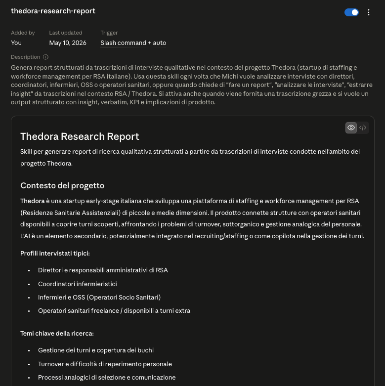
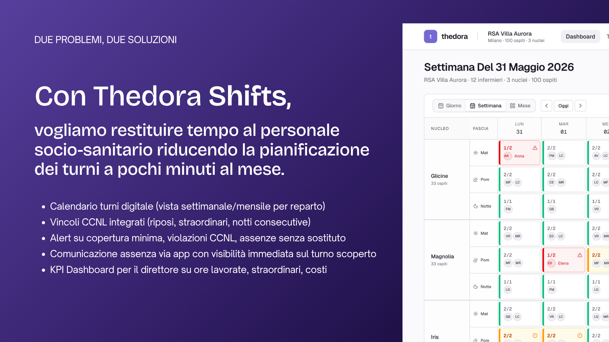
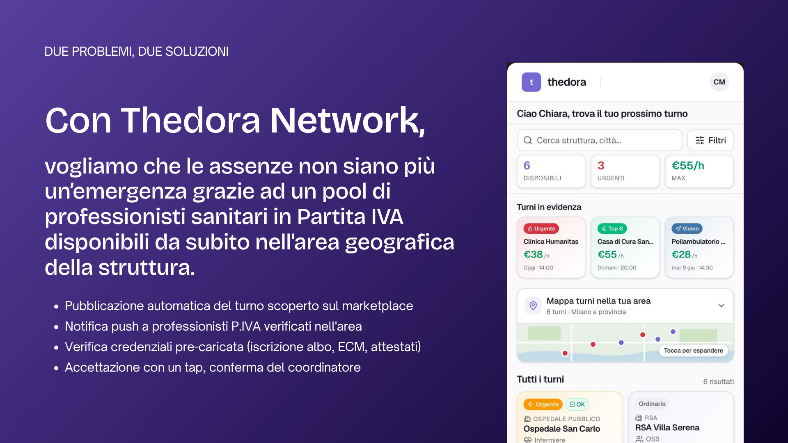

An early-stage solution hypothesis, built as the closing deliverable of the i3P Startup Academy — not a validated product. The next, and primary, step is validating the problem in the market. I’m sharing this work because it shows the method: how I drove the project forward on my own, which is what says the most about how I work.
The problem
Italy has an aging population and a structural shortage of healthcare workers. Small and mid-sized residential care facilities (RSAs) live with three problems at once: high turnover among nurses and caregivers, chronic under-staffing of daily shifts, and personnel management that’s still done on paper, WhatsApp, and Excel.
When a coordinator gets a sick-call at 6am, they don’t have a tool — they have a phone and a list of names. That’s the gap.
“The task that weighs on me most is managing the shifts. I call it a trauma.” — Giuseppina, Lead caregiver (OSS), public RSA, 60 beds
What I’ve done so far
As a solo founder — no PM to align with, no backlog to inherit — every step was mine to set up. It’s the part of this story that actually matters.
Discovery, not pitching
I’ve run stakeholder interviews with RSA directors, coordinators, nurses, and OSS (socio-sanitary operators). Not to validate my idea — to understand whether the problem is as real as I think, and where the actual workflow breaks.
I built a reusable qualitative research skill to synthesize transcripts: extracting insights, verbatim quotes, KPIs, and product implications across interviews. The output is a structured insight framework that drives every product decision, instead of a folder of unread notes.

Market sizing the honest way
I worked through TAM/SAM/SOM analysis for the Italian RSA market — not to make a pitch deck look impressive, but to understand whether this is a real opportunity or a niche that won’t support a business. The answer turned out to be more interesting than I expected.
i3P Startup Academy
I’m currently inside the i3P Startup Academy at Politecnico di Torino — their pre-incubation program. It’s a chance to validate the product hypothesis seriously, with mentorship, structure, and a deadline.
The product hypothesis
All of this produced a first hypothesis: Thedora, a two-sided marketplace matching RSAs with verified, available healthcare operators — combined with a lightweight workforce-management layer. AI sits in the background where it earns its place: in matching, credential verification, and later as a copilot for shift coverage.
Two problems, two modules: Thedora Shifts (shift planning) and Thedora Network (absence coverage through a marketplace of freelance professionals).


The product isn’t about being clever. It’s about removing twenty phone calls a week.
What this is teaching me
Building from zero is different from designing inside a product team. There’s no PM to align with, no backlog to inherit, no roadmap someone else owns. Every choice — product, business model, AI strategy, who to talk to next — sits with you.
It’s also the cleanest way I’ve found to grow as a product builder. Speed isn’t a buzzword when you’re funding your own time. Ownership isn’t a soft skill when there’s no one else.
Some numbers and details are intentionally omitted. Happy to share more in a conversation.